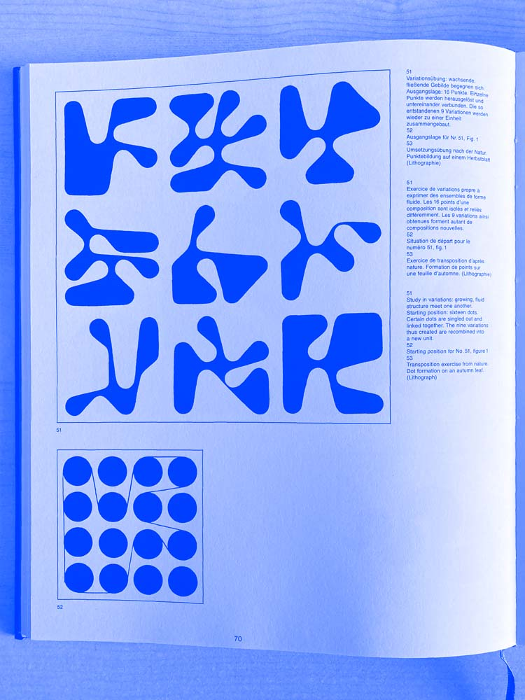

Fig. 1
Fig. 2

Fig. 3
Hello dear visitor and curious human,
this page offers you a little insight into the creation of this open-source tool. You will read about a swiss designer and his visual experiments, a sunny beach, some lines and dots and their variations.
First of all: the origins
The project started a few months ago, on a hot summer day, under a tree, by a beautiful beach in Bari. However, to be precise, the idea and the procedures were invented quite long ago, much farther north and in a much colder place, by a Swiss designer called Armin Hofmann.
Before a deep dive into the project, an introduction about Hoffmann.
Armin Hoffmann has always been a great inspiration for designers and artists all around the world. He is known especially for his artworks and experiments, as well as for his unorthodox teaching methodologies.
One of the main themes throughout his visual research is the idea of variation and experimentation: by continuously drawing variations of the same shape, considering even the slightest change, the designer can fully understand “how the shape works” and thus create artworks that employ that shape perfectly. It’s quite clear how the process of exploration is definitely more important than the final result itself.
We could talk and talk about Hoffmann for hours and days dealing with dots, lines, shapes, grids, compositions, contrast, exercises and studies of visual variations – but we strongly recommend reading his own words, from his books and manuals (like the awesome “Graphic Design Manual: Principle and practice” from 1965) [Fig.1].
This year is Hofmann’s 100th birthday: Hofmann 1.0.0 wants to be a homage to the designer and his teaching methodologies.
About dots and lines
Of Hoffmann's wide range of visual experiments, 3 variations are the focus of this project: variation 51, 52, 53 [Figg.2–3] from the Graphic Design Manual: Principle and Practice.
The graphic system is actually very simple: it starts with a grid of dots, and the shapes are then created by joining the dots through tangent lines.
For Hofmann, these figures are an exercise in creating relationships between lines and dots: “If the dot is an important element in structure and analysis, the line performs the important duty of construction. It joints, articulates, bears, supports, holds together and protects”.
The tool
The original variations are hand-made, but experimenting with them today is not easier: curiously, with common graphic design software like Adobe Illustrator it’s not that easy to draw tangents to circles.
This is why a tool (instead of a fixed artwork) felt more appropriate as a tribute to Hofmann. By removing – with a specifically-built software – the technical complexity in drawing the shapes, the user has just to focus on the exercise of variation and exploration – thus focusing on what mattered the most to Hofmann.
Open source by choice
This tool was made with no budget, but with a lot of time and passion. No client behind it. It was solely driven by the curiosity of understanding how the system worked, and how it could be translated in logical and mathematical language.
There’s not actually a specific reason behind why Hofmann 1.0.0 is open source – probably it’s just pure idealism. But I think giving open access to research and creation tools is a way to make things better. (And seeing that friends are already having fun spending time with the tool is nice :D)
And so, dear visitor and curious human, we get to the end of this sunny and warm day. If you’d like to contribute, you could donate something or just share the tool to other designers, artists and curious humans :)
* Credits *
Code: Giovanni Abbatepaolo
UX/UI: Giovanni Abbatepaolo & Arianna Smaron
Thanks to all the people that had fun with the tool and made the shapes :)